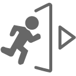
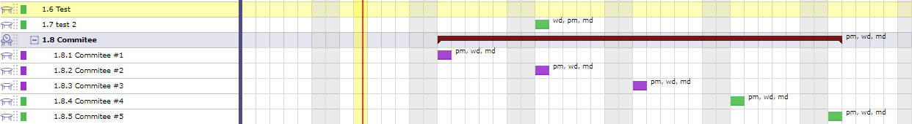
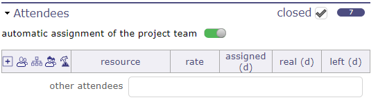
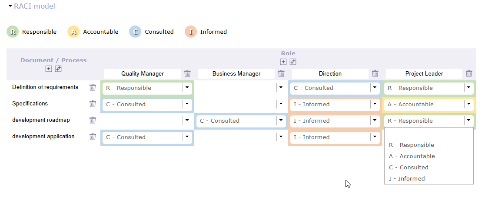
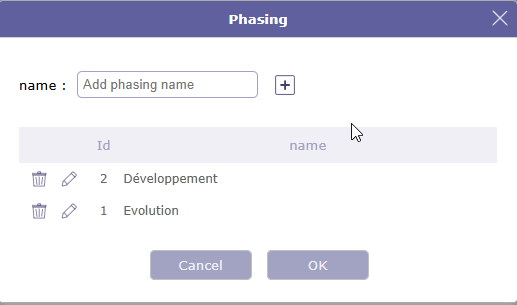
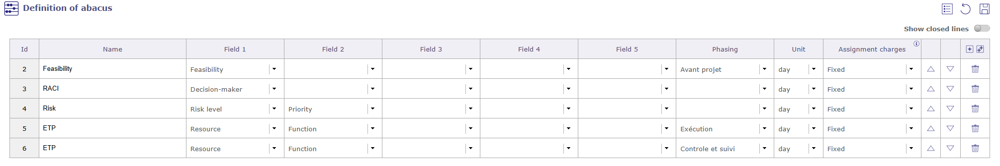
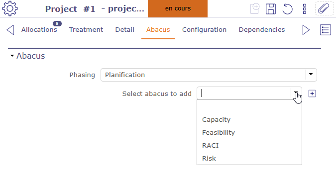
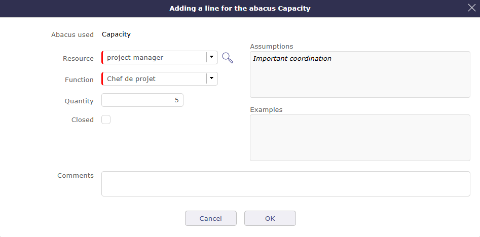

Pilotage¶
Réunions¶

Écran des réunions¶
Les éléments de réunion sont stockés pour garder la trace des réunions importantes pendant le cycle de vie du projet :
Réunions d’avancement
Comités de pilotage
Ateliers fonctionnels
Garder la trace de chaque réunion permet de suivre les décisions ou les réponses aux questions prises lors de celles-ci.
Cela permettra de retrouver facilement quand, où et pourquoi une décision a été prise.
Chaque réunion est affichée dans l’agenda. Listée dans l’ordre chronologique au cours de la journée.
Si le manager est renseigné, il est automatiquement ajouté aux affectations de la réunion.
Si l’une des ressources est affectée à une autre réunion le même jour, un message non bloquant est affiché si les horaires se chevauchent.
Tâche de projet¶
La réunion est une tâche planifiée. Elles apparaissent dans le diagramme de Gantt et les feuilles d’imputation avec la date fixée.
Vous pouvez affecter des ressources du projet (nommées participants).
Vous avez une section avancement qui permet le suivi du travail et des coûts des ressources.
La description peut être utilisée pour stocker l’ordre du jour.
Invitation par e-mail¶
Permet d’envoyer l’e-mail aux participants.
Ils recevront l’invitation dans leur outil de gestion du calendrier.
Note
Compte rendu
Vous pouvez saisir ici uniquement un bref résumé du compte rendu et joindre le compte rendu complet en tant que fichier.
Pilotage
Récupération de l’ordre du jour d’une réunion à partir de la description de son type
Journal
Visualisation des réunions dans l’agenda, même si elles ne sont pas planifiées
Réunion en direct¶
LiveMeeting vous permet de gérer les réunions de manière Agile.
Gérez la production écrite rapidement et facilement.
Récupération dans le liveMeeting de l’ordre du jour établi sur l’écran de réunion.
Sauvegarde automatique du compte rendu lors de la sortie de la réunion en direct.
Partagez automatiquement le temps entre tous les participants.
Mesurez dynamiquement le temps de parole de chaque participant.
Rédigez facilement le compte rendu pendant que les assistants parlent.
Gérez facilement les actions / décisions / questions lors de la rédaction du compte rendu.
Gérez les tickets, activités, actions et exigences avec le Kanban lors de la rédaction du compte rendu.
Sauvegarde des éléments saisis en direct dans la section compte rendu de la réunion.
Cliquez sur le bouton Démarrer la réunion pour accéder à l’écran de gestion de la réunion en direct.

L’écran de la réunion en direct¶
Cliquez sur Masquer les compteurs de temps pour afficher ou masquer les onglets des participants avec leur temps de parole
Cliquez sur
 pour démarrer la réunion et commencer à décrémenter le temps de parole
pour démarrer la réunion et commencer à décrémenter le temps de paroleCliquez sur pour arrêter la réunion et fermer la fenêtre LiveMeeting
Cliquez sur

pour quitter l’écran LiveMeetingCliquez sur
 pour sauvegarder le compte rendu de la réunion en direct
pour sauvegarder le compte rendu de la réunion en direct
{kind=link}
{kind=link}
Voir aussi
Gestion Kanban¶
Cliquez sur  pour gérer les kanbans.
pour gérer les kanbans.

Gestion Kanban dans la réunion en direct¶
Vous pouvez gérer vos tuiles Kanban directement dans l’interface de réunion en direct.
Voir aussi
Réunions périodiques¶
La réunion périodique est un moyen de définir des réunions qui auront lieu régulièrement.

Écran des réunions périodiques¶
Avertissement
La plupart des champs correspondent entre la réunion et la réunion récurrente, mais certaines informations ne sont pas présentes pour les réunions récurrentes, comme le compte rendu ou le statut.
Lors de l’enregistrement d’une réunion récurrente, chaque réunion est automatiquement créée dans un dossier parent, la réunion récurrente.

Affichage des réunions unitaires sous le dossier parent¶
Lorsque le dossier parent est fermé, les lignes de réunion ne sont pas visibles, mais elles apparaissent sur la même ligne que le dossier.

Affichage des réunions individuelles sur la barre du dossier parent¶
Des modifications peuvent être apportées sur chaque réunion de groupe.
Dans la plupart des cas, ces modifications ne seront pas affectées ou effacées par les mises à jour des réunions périodiques.
Les réunions créées par l’enregistrement d’une réunion récurrente seront également affichées sur l’écran des réunions.
Les participants peuvent être définis sur une réunion périodique.
L’affectation de toute l’équipe projet à une réunion périodique (comme pour une réunion simple) est possible mais les participants ne seront visibles que sur les réunions unitaires.
Les réunions périodiques ne seront pas planifiées, seules les réunions élémentaires le seront.
Ainsi le reste à faire sera toujours défini à zéro sur les réunions périodiques.
Ressource responsable de l’organisation de la réunion. Mais le responsable n’est pas automatiquement affecté.
Mise à jour d’une réunion périodique
À chaque mise à jour d’une réunion périodique, les réunions sont réévaluées.
Cela peut entraîner la suppression de certaines réunions.
Cela repositionnera également les réunions, même si leurs dates planifiées ont été mises à jour élémentairement.
Section affectation des participants¶
Les participants peuvent être définis sur une réunion périodique.

section participants¶
L’affectation d’une équipe projet à une réunion périodique est possible.
Les participants sont visibles en mode lecture seule depuis la réunion récurrente mais peuvent être modifiés individuellement sur les écrans des réunions unitaires.
Vous pouvez définir une activité parent pour la réunion.

affichage des réunions sous une activité parent dans le diagramme de Gantt¶
Les réunions seront affichées sous l’activité sélectionnée.
Section Périodicité¶
Vous pouvez définir une heure et une fréquence pour vos réunions.

Section Périodicité¶
La période des réunions récurrentes peut être saisie manuellement ou vous pouvez récupérer les dates du projet sélectionné en cliquant sur le bouton obtenir les dates du projet.
Le nombre d’occurrences et/ou la date de fin peut être complété automatiquement en saisissant l’un ou l’autre de ces critères.
Renseignez l’heure - Les plannings de réunion vous permettent de calculer et de renseigner automatiquement la charge de travail à affecter aux ressources - participants de la réunion dans le tableau des affectations.
Périodicité¶
Selon la fréquence sélectionnée dans la liste déroulante, les informations de paramètres affichées sont différentes.
Chaque jour
Exemple –> tous les 3 jours
Le nombre d’occurrences à personnaliser
Même jour chaque semaine
exemple –> Le vendredi toutes les 2 semaines
Même jour chaque mois
exemple –> jour 7 tous les 2 mois
Même semaine chaque mois
exemple –> Le 1**er **lundi tous les 2 mois
Si la périodicité est susceptible d’inclure des jours non ouvrés, cochez la case pour ne conserver que les réunions qui tomberont un jour ouvré.
Section Participants¶
Cette section permet de définir la liste des participants à la réunion.
La liste des participants est affichée avec
Le taux d’affectation
Le temps affecté et planifié pour cette activité
Le temps réel renseigné par les ressources
Le reste à faire.
Si une ressource a une date d’entrée saisie, elle sera prise en compte.
Les ressources antérieures à leur date d’entrée ne seront pas affichées sur la réunion antérieure à cette date.
Ainsi les travaux de réunion de ces participants sont réservés dans le projet.
Possibilité d’affecter à une réunion une ressource ou un contact ou un utilisateur non membre de l’équipe projet.
Une icône spéciale est placée sur les lignes de ressources représentant un réservoir de ressources.

Section Participants¶
Vous pouvez affecter une équipe au réservoir de ressources, l’une dynamique et l’autre statique.
Le bouton bascule affectation automatique de l’équipe projet au-dessus du tableau d’affectation vous permet d’affecter l’équipe projet actuelle. Si une ressource est ajoutée au projet, elle sera également affectée à la réunion.
Le bouton affecter toute l’équipe projet affecte l’équipe projet de temps en temps. Si une ressource est affectée au projet ultérieurement, elle ne sera pas ajoutée à l’affectation de la réunion
Liste des participants¶
Cliquez sur
 pour ajouter un nouveau participant
pour ajouter un nouveau participantCliquez sur
 pour modifier l’affectation de la ressource
pour modifier l’affectation de la ressourceCliquez sur
 pour supprimer l’affectation de la ressource
pour supprimer l’affectation de la ressourceCliquez sur
 pour diviser l’affectation avec une autre ressource
pour diviser l’affectation avec une autre ressourceCliquez sur
 pour accéder à l’écran de feuille de temps de la ressource pour la semaine où la réunion était planifiée
pour accéder à l’écran de feuille de temps de la ressource pour la semaine où la réunion était planifiée
Option participant obligatoire et participant facultatif
L’icône  indique que la présence du participant est obligatoire
indique que la présence du participant est obligatoire

Participant facultatif¶
Plus de détails sur la façon d’affecter des ressources de projet, voir : section Section Assignation.
Autres participants
Liste supplémentaire de personnes participant (ou prévoyant de participer) à la réunion, en complément des ressources dans la liste des participants.
Vous pouvez saisir des participants par adresse e-mail, nom de ressource ou de contact, nom d’utilisateur ou initiales sans vous en préoccuper.
Séparez simplement les participants par des virgules ou des points-virgules.
Note
Les adresses e-mail en double dans la liste des participants seront automatiquement supprimées.
Demande de changement¶
La fonctionnalité de demande de changement assure un suivi efficace des demandes de changement de votre client.
Son but est de décrire un processus qui indique clairement comment le changement est communiqué, comment les décisions seront prises et par qui et comment le projet s’adaptera en conséquence.
Une demande de changement est très proche d’une exigence, elle peut également générer plusieurs exigences. La demande de changement est nécessairement liée à un projet et peut être liée à un produit.
Décisions¶
Les décisions sont stockées pour garder la trace des décisions importantes, quand, où et pourquoi la décision a été prise.
Vous pouvez lier une décision à une réunion pour retrouver rapidement le compte rendu où la décision est décrite.
Note
Le champ Origine peut être soit la référence à une réunion où la décision a été prise (ajoutez donc également la référence à la liste des réunions), soit une brève description de la raison pour laquelle la décision a été prise.
Le champ Responsable est la personne qui a pris la décision.
Questions¶
Les questions sont stockées pour garder la trace des questions et réponses importantes.
En fait, vous devriez garder la trace de chaque question et réponse ayant un impact sur le projet.
Les questions peuvent également offrir un moyen facile de suivre les questions envoyées et de relancer celles sans réponse.
Cela permettra de retrouver facilement quand, qui et la description précise de la réponse à une question.
Gardez également à l’esprit que certaines personnes pourront (consciemment ou non) changer d’avis et soutenir que c’a toujours été leur opinion…
Vous pouvez lier une question à une réunion pour retrouver rapidement le compte rendu où la question a été soulevée ou répondue.
Indicateur de suivi
Possibilité de définir des indicateurs pour suivre le respect des valeurs de dates.
Respect de la date d’échéance initiale
Respect de la date d’échéance planifiée
Livrables¶
Cette section permet de définir la liste des éléments livrables.
Cela permettra d’organiser facilement vos livraisons aux clients.
En fait, vous pouvez garder la trace de tous les livrables.
Les livrables sont liés aux jalons.
Note
Si vous changez le responsable des jalons, le responsable du livrable changera automatiquement, et vice versa.
Vous pouvez estimer la valeur qualité pour un livrable et cela produira un KPI.
Voir aussi
Pour suivre la gestion du cycle de vie des livrables (statut géré comme un workflow)
Entrants¶
Cette section permet de définir la liste des éléments entrants provenant des clients.
Cela peut être un indicateur à suivre pour savoir si vous pouvez commencer une action. Par exemple, si vous avez besoin d’un élément du client.
Les entrants sont liés aux jalons.
Note
Si vous changez le responsable des jalons, le responsable des Entrants changera automatiquement, et vice versa.
Vous pouvez estimer la valeur qualité pour un entrant et cela produira un KPI. Voir : Définitions des KPI
Livraisons¶
Les éléments de livraison sont stockés pour garder la trace des livraisons.
Liste ajoutée de livrables intégrés dans la livraison.
Note
Envoi automatique du statut de livraison aux livrables.
Pour suivre la gestion du cycle de vie des livraisons (statut géré par un workflow)
Suivi des courriers¶
Le courrier entrant et sortant permet la dématérialisation du courrier pour faciliter sa distribution, permettre l’archivage et le suivi par tous les employés
Courriers entrants

Écran des courriers entrants¶
Description de l’émetteur¶
Dans cette section, il est possible d’indiquer quel est l’émetteur.
Si c’est un contact connu de votre base de données, vous pouvez le sélectionner directement depuis les listes.
Approbateurs¶
Vous pouvez définir des approbateurs pour un courrier.
Cliquez sur
pour ajouter un approbateurCliquez sur
pour supprimer un approbateur
Sur l’écran du courrier entrant, l’approbateur peut approuver ou rejeter le courrier.
Tous les approbateurs du courrier peuvent voir la réponse des autres approbateurs.
Statut d’approbation¶
Ce statut vous permet de suivre globalement le statut de l’approbation.
Il peut être utilisé dans un filtre, comme tous les autres champs de l’objet courrier.
calculé selon le statut d’approbation du courrier, il peut prendre les valeurs suivantes :
Sans approbation : si aucun approbateur n’a été ajouté à la liste des approbateurs
Rejeté : si au moins un approbateur a rejeté le courrier
En attente d’approbation : s’il y a au moins un approbateur qui n’a pas approuvé le document et que personne n’a encore rejeté le courrier
Approuvé : si tous les approbateurs ont approuvé le courrier.
Courriers sortants¶

Écran des courriers sortants¶
Description de l’émetteur¶
Dans cette section, il est possible d’indiquer quel est l’émetteur.
Si c’est un contact connu de votre base de données, vous pouvez le sélectionner directement depuis les listes.
Approbateurs¶
Vous pouvez définir des approbateurs pour un courrier.
Cliquez sur
pour ajouter un approbateurCliquez sur
pour supprimer un approbateur
Sur l’écran du courrier sortant, l’approbateur peut approuver ou rejeter le courrier.
Tous les approbateurs du courrier peuvent voir la réponse des autres approbateurs.
Statut d’approbation¶
Ce statut vous permet de suivre globalement le statut de l’approbation.
Il peut être utilisé dans un filtre, comme tous les autres champs de l’objet courrier.
calculé selon le statut d’approbation du courrier, il peut prendre les valeurs suivantes :
Sans approbation : si aucun approbateur n’a été ajouté à la liste des approbateurs
Rejeté : si au moins un approbateur a rejeté le courrier
En attente d’approbation : s’il y a au moins un approbateur qui n’a pas approuvé le document et que personne n’a encore rejeté le courrier
Approuvé : si tous les approbateurs ont approuvé le courrier.
Analyse de projet¶
ProjeQtOr vous permet d’enregistrer des hypothèses, des contraintes et des leçons apprises.
Cela implique d’avoir plusieurs écrans pour saisir ces informations qui peuvent être liées au projet comme chaque élément de ProjeQtOr.
Ces écrans vous permettront d’établir un plan de gestion pour vos projets, quels qu’ils soient.
RACI¶
Un diagramme RACI (ou matrice RACI) est un outil de gestion de projet utilisé pour définir et attribuer les rôles et responsabilités pour chaque tâche, action ou livrable.
L’acronyme représente quatre types de responsabilités :
Responsible (Réalisateur)
Accountable (Approbateur)
Consulted (Consulté)
Informed (Informé)
Lettre |
Rôle en anglais |
Équivalent français |
Mission concrète |
|---|---|---|---|
R |
Responsible |
Exécutant / Réalisateur |
La ou les personnes qui réalisent le travail ou produisent le livrable de la tâche. Plusieurs ressources peuvent être désignées Responsible pour la même tâche. |
A |
Accountable |
Approbateur / Responsable |
La personne qui assume la responsabilité finale du travail et valide son achèvement. Il ne peut y avoir qu”un seul Accountable par tâche. La personne Accountable peut également être Responsible. |
C |
Consulted |
Consulté |
L’expert ou la partie prenante dont l’avis ou l’expertise est sollicité avant la finalisation de la tâche. |
I |
Informed |
Informé |
Les personnes qui doivent être tenues informées de l’avancement ou de l’achèvement de la tâche. |
Vous pouvez créer autant de matrices RACI standard et de rôles que nécessaire, par exemple pour les adapter aux différents types de projets que vous gérez.
Une matrice RACI standard peut ensuite être sélectionnée et réutilisée sur vos projets, évitant ainsi de devoir redéfinir la structure RACI pour chaque projet.
Dans le détail de chaque matrice, vous définissez la répartition des responsabilités entre les différents documents et rôles/fonctions impliqués dans le projet.

Matrice RACI¶
Cliquez sur
 pour ajouter une ligne pour un document ou un rôle.
pour ajouter une ligne pour un document ou un rôle.
{kind=link}
Pour chaque ligne, sélectionnez la responsabilité RACI attribuée à chaque rôle/fonction.
Note
Un seul approbateur par document est autorisé.
RACI sur le projet¶
Dans le projet, accédez à l’onglet Détails pour accéder à la section RACI, où vous pouvez sélectionner la matrice à utiliser pour le projet.
Une fois la matrice sélectionnée, le tableau RACI s’affiche avec les rôles et fonctions définis dans la matrice.
Vous pouvez ensuite affecter vos ressources de projet à ces rôles/fonctions.

Affectation des ressources sur votre matrice RACI¶
Pour affecter une ressource, cliquez et faites-la glisser dans la cellule correspondante pour chaque rôle ou fonction.
Les ressources peuvent être déplacées d’un rôle/fonction à un autre à tout moment.
Abaque¶
Un projet est caractérisé par une durée de vie limitée. Au cours de ce cycle de vie, il passe par différentes étapes, constituant ainsi le cycle de vie du projet.
Les abaques permettent de formaliser les règles empiriques issues de l’expérience acquise lors des projets et de les réappliquer aux différentes étapes du projet.
Ils servent à structurer et consolider les informations permettant l’estimation ou l’évaluation de certains éléments d’un projet, par exemple :
une durée probable
une charge de travail estimée
un coût
un niveau de priorité
un niveau de risque
ou toute autre information utile à la gestion de projet.
Un abaque est donc un tableau de correspondance entre plusieurs critères et une valeur résultante.
Phasage¶
Le phasage permet de lier le contenu d’un nomogramme à une étape spécifique du cycle de vie d’un projet.
Il sert à structurer les estimations selon l’avancement du projet et à fournir des références adaptées au contexte de chaque phase.
Cliquez sur pour créer les phases de votre projet

Phasage¶
Contenu des phases¶
Une fois vos phases de projet créées, remplissez chacune de ces phases avec du contenu.
Cliquez sur pour ouvrir la fenêtre contextuelle d’ajout de phasage
Cliquez sur pour enregistrer la nouvelle phase

Ajouter un nouveau phasage¶
Le contenu des phases n’est pas obligatoire mais vous permet d’estimer leur durée.
Saisissez les durées afin que ces données soient récupérées pour le projet.
Cliquez sur pour ajouter une nouvelle ligne
Cliquez sur pour ajouter 10 nouvelles lignes

Contenu des phases¶
Définition des abaques¶
La première étape consiste à définir la structure de l’abaque.
Chaque abaque se compose de :
un nom
une liste de critères (champs)
un pivot représentant la valeur résultante
une unité

Définition des abaques¶
Les critères correspondent aux dimensions d’analyse utilisées pour construire la règle.
L’abaque indique ensuite combien de jours doivent être pris en compte selon ces critères.
Vous pouvez ajouter des critères à partir de la liste fournie.
Cliquez sur
 pour ajouter des critères dans les champs
pour ajouter des critères dans les champs

Définition des abaques¶
Vous pouvez lier un abaque à une phase. Dans ce cas, vous ne verrez ces abaques que si vous sélectionnez la phase correspondante.
Les phases non liées à un abaque afficheront tous les abaques.
Remplissage des abaques¶
Une fois les nomogrammes définis, les valeurs correspondant aux différentes combinaisons de critères doivent être saisies.
Chaque ligne correspond à :
une combinaison de critères
une valeur associée
Ces valeurs représentent des hypothèses issues de l’expérience ou de références internes.
Le remplissage des nomogrammes peut être basé sur :
l’historique du projet
l’expérience du chef de projet
les standards organisationnels.

Définition des abaques¶
Abaques sur le projet¶
Une fois les abaques remplis, vous pouvez les lier à vos projets afin que vos collaborateurs disposent d’une base stable pour démarrer les étapes du projet.

Abaques sur le projet¶
Dans la liste déroulante « phasage », vous trouverez les phases précédemment créées.
Lorsque vous sélectionnez une phase, tous les nomogrammes sont proposés dans la liste déroulante.
Tant que vous ne sauvegardez pas l’écran, vous pouvez ajouter autant de lignes que vous le souhaitez en utilisant n’importe quel nomogramme.
Une fois l’écran sauvegardé avec la phase sélectionnée, seuls les graphiques relatifs à cette phase seront affichés.

Abaques sur le projet¶
Sélectionnez la phase correspondante et choisissez les différents graphiques à appliquer.
Cliquez sur pour ajouter et renseigner le nomogramme sur le projet.

Fenêtre contextuelle d’ajout d’abaques sur le projet¶
Selon l’abaque sélectionné, la fenêtre contextuelle affichera les informations nécessaires, les rendant obligatoires.
Abaques sur le projet¶
Lorsque le nomogramme est ajouté, deux boutons sont disponibles.
Créer des affectations
Vous permet de créer des affectations pour les activités en utilisant les informations relatives au phasage et au nomogramme lié.
Affecter toutes les ressources utilisées
Vous permet d’affecter les ressources sélectionnées au projet en utilisant les nomogrammes.